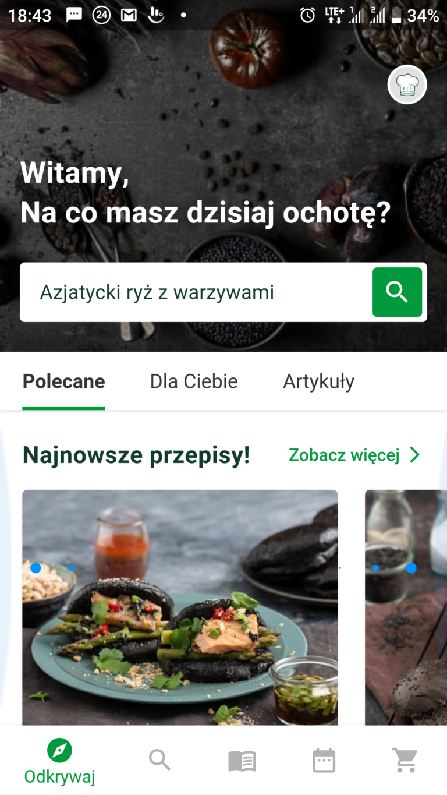

Czym tak naprawdę jest Thermomix? Czy to tylko "garnek z
Internetem"?
Gdy przed zakupem thermomixa TM6 szukałam opinii o tym
urządzeniu, zaskoczyło mnie to jak są one zróżnicowane. Z jednej
strony były osoby które go uwielbiały, natomiast z drugiej takie
który twierdziły że to tylko „garnek z internetem za 5 i pól
tysiąca”. Sama nie byłam specjalnie przekonana do najnowszej
wersji, chociaż urządzenie themomix TM21 doskonale znałam od
dziecka i bardzo doceniałam.
Moje nastawienie jednak drastycznie się zmieniło po wzięciu
udziału w prezentacji thermomixa TM6. Nawet mój mąż, który był
negatywnie nastawiony na tak spory wydatek, zmienił zdanie.
Kilka dni po prezentacji posiadaliśmy już nasz nowy thermomix
TM6.
Ale czemu zmieniliśmy zdanie podczas jednego wieczoru? Otóż
okazuje się całą robotę robi ten Internet, a właściwie aplikacja
cookidoo.
Nie od dziś wiadomo że najlepiej na własnej skórze przetestować
każdy produkt. Dlatego jeśli jesteś ciekawy o co chodzi z tym
Internetem i czemu uważam że Thermomix jak samochód powinien być
w każdym domu to zadzwoń i umów się na prezentację. Gwarantuję
że się nierozczarujesz.
